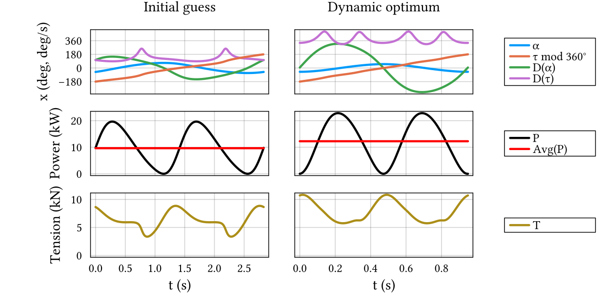
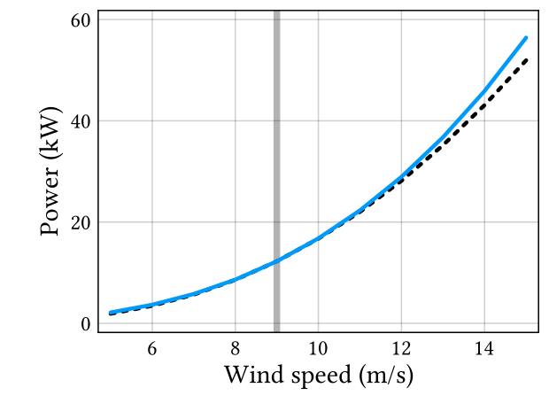
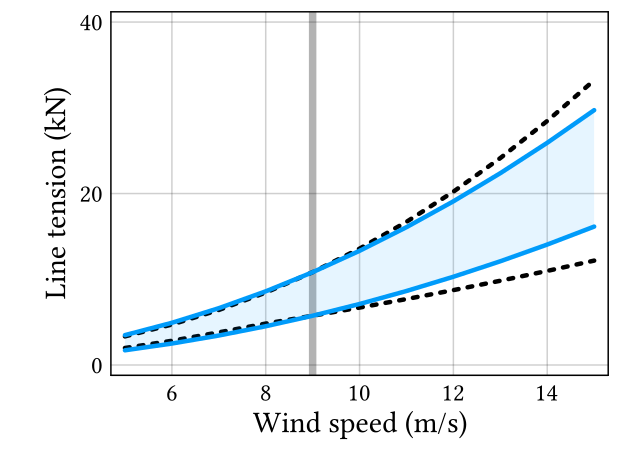
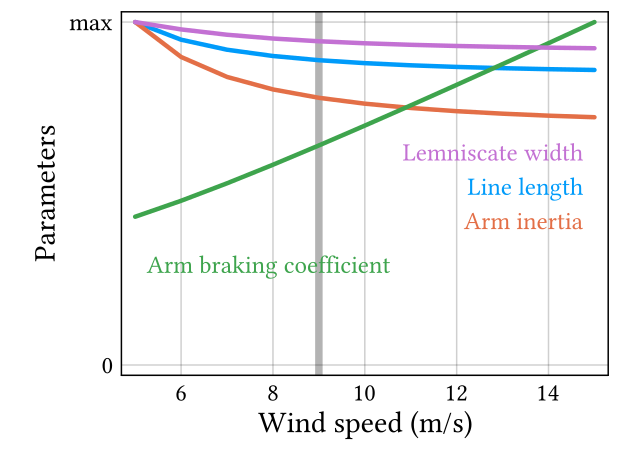
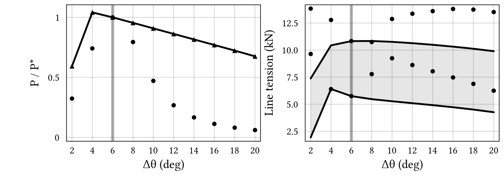
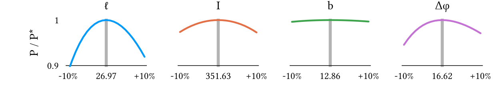

4 Optimization
We designed this model to evaluate the average power output of KEEP. In the previous section, we computed limit cycles for a given set of environment and design parameters. We now fix the environment, mainly the reference wind speed \(w_0\), and maximize the average power output over one revolution of a periodic orbit by tuning a selection of design parameters.
4.1 Optimizing for maximum average power
To assess the quality of a set of parameters, we measure the total work done by the generator, i.e. the amount of energy extracted from the system. We obtain this information by augmenting the state with the work \(W\) done since the start of the simulation, whose time derivative is the instantaneous power, namely the product of (the opposite of) the torque and the arm angular velocity: \begin{equation} \tag{56} W(0) = 0, \qquad \dot W = P = - \dot \alpha \, T(\dot \alpha) = b \, \dot \alpha^2 \geq 0. \end{equation} The work is integrated concurrently with \(\vb x = (\alpha, \tau, \dot \alpha, \dot \tau)\), using the same numerical scheme, and we denote the augmented state \(\tilde{\vb x} = (\vb x, W)\). The average power over a periodic orbit of period \(t_f\) is then \begin{equation} \bar P = W_f / t_f, \qquad W_f = W(t_f). \tag{57}\end{equation} Since the trajectory converges to the same periodic orbit (given \(\dot \tau > 0\)), maximizing the average power as \(t \to \infty\) is equivalent to maximizing it over one period of this orbit.
For the solution of the ivp to be a periodic orbit, looping constraints must be enforced at \(t_f\), which yields a bvp. Without loss of generality, we fix the phase by imposing \(\tau(0) = 0\), so that \(\tau(t_f) = \pm 2\pi\). The sign determines the direction of travel of the kite: it rises either on the sides of the eight (\(\tau(t_f) = +2\pi\)) or in its center (\(\tau(t_f) = -2\pi\)). To avoid the lines sliding against each other, we choose the former.
We optimize the line length \(\ell\), the arm inertia \(I\), the braking coefficient \(b\) of the generator and the half-width \(\Delta\varphi\) of the eight, and denote by \(\Theta = (\ell, I, b, \Delta\varphi)\) the vector of design parameters; the half-height \(\Delta\theta = 6.0^\circ\) of the eight is held fixed. The optimization problem reads \begin{equation} \tag{58} W_f / t_f \underset{\substack{\alpha_0, \dot{\alpha}_0, \dot{\tau}_0 \\ W_f, t_f \\ \Theta}}{\longrightarrow} \max \end{equation} subject to constraints \begin{equation} \tag{59} \begin{split} &\alpha(t_f, \Theta) = \alpha_0 \\ &\tau(t_f, \Theta) = 2\pi \\ &\dot \alpha(t_f, \Theta) = \dot \alpha_0 \\ &\dot \tau(t_f, \Theta) = \dot \tau_0 \\ &W(t_f, \Theta) = W_f, \end{split} \end{equation} where the components of \(\tilde{\vb x}(t_f, \Theta)\) are obtained by integrating the ivp from \(\tilde{\vb x}_0 = (\alpha_0, 0, \dot \alpha_0, \dot \tau_0, 0)\) with parameters \(\Theta\), and \(W_f\) is a slack variable for the final work. In the search for parameters that provide more power, the solver thus also determines the corresponding initial condition lying on the periodic orbit.
We reuse our work on equilibria and limit cycles to provide the solver with an initial guess that satisfies the constraints. Starting from a physically reasonable set of parameters \(\Theta_0\), we compute the corresponding limit cycle (with the correct direction of travel), from which we extract \(\alpha_0, \dot \alpha_0, \dot \tau_0, t_f\) and \(W_f\); this results into a feasible point.
The problem is modelled with ADNLPModels.jl (Migot et al. 2021), which computes all required derivatives algorithmically with ForwardDiff.jl (Revels et al. 2016). It is solved by the interior point method implemented in Ipopt (Wächter and Biegler 2006) (tolerance \(10^{-5}\)), called through NLPModelsIpopt.jl, with linear solver MUMPS (Amestoy et al. 2001). The ivp appearing in the nonlinear constraints is solved at tolerance \(10^{-6}\) with Vern9, Verner’s Runge–Kutta 9(8) method from DifferentialEquations.jl (Rackauckas and Nie 2017). The limit cycles from which the tables, figures and numbers of this section are computed are recomputed from the parameters, by settling and Newton’s method (Section 3.2), with integration tolerance \(10^{-5}\). The parameters and their bounds are described in Table 3, while the result of the optimization is presented in Table 4. Ipopt solves the problem in 20 iterations; as for any interior point method, the solution is a local optimum. The pipeline stops if Ipopt does not reach its tolerance, or if the power of its periodic orbit differs from that of the cycle recomputed at the optimum by settling and Newton’s method (Section 3.2). Figure 15 shows the average power along one-dimensional slices through the optimum, each parameter varying while the others are held. The optimized cycle remains attracting, but less strongly: the largest modulus of its non-trivial Floquet multipliers is \(2.2 \times 10^{-1}\), against \(8.5 \times 10^{-3}\) for the initial guess. We show the limit cycles before and after optimization in Figure 10: the period goes from 2.83 s to 0.95 s, and the average power from 9.64 kW to 12.25 kW (\(+27\%\)). These powers depend strongly on the glide ratio of the kite, \(G = C_L/C_D = 7\) here: with \(G = 5\), a value more typical of soft kites, the optimized design produces 5.38 kW.
| Symbol (Unit) | Lower bound | Upper bound |
|---|---|---|
| \(\ell\) (m) | 15.0 | 200.0 |
| \(I\) (kg m2) | 62.0 | 1000000.0 |
| \(b\) (N m s °−1) | 0.0175 | 17453.3 |
| \(\Delta\varphi\) (°) | 10.0 | 90.0 |
Code that produced this table
src/optimization.jl (region opt_setup), see also the full file.
p_start = PMP.build_para(w0=WIND_REF)
p_start.b = PMP.optimal_torque_slope(p_start; tol=1e-9, rtol=1e-9, maxiter=50) # b = I ω
lower = [first(L_BOUNDS), first(I_BOUNDS), first(B_BOUNDS), first(DPHI_BOUNDS)]
upper = [last(L_BOUNDS), last(I_BOUNDS), last(B_BOUNDS), last(DPHI_BOUNDS)]
@info "opt: reference at $(WIND_REF) m/s over Θ = ($(join(SYMS, ", ")))"
opt_ref = opt_step(p_start, SYMS, lower, upper; iters=it_ref, strict=!fast)
p_ref = opt_ref.p # the Θ optimum at the reference wind speed
# the power of the solver's orbit must be that of the cycle recomputed from p_ref
# (settling + Newton), which every table and figure uses
let Pc = cycle_report(p_ref).P, gap = abs(opt_ref.P - Pc) / abs(Pc)
msg = "optimum: solver power $(opt_ref.P) vs recomputed cycle $Pc (rel. gap $gap)"
gap < 1e-3 || (fast ? @warn(msg) : error(msg))
endsrc/optimization.jl (region opt_tables), see also the full file.
## Tables
table_descr, table_opt = latex_tables(p_start, p_ref, lower, upper)
push!(files, write_table("table2", table_descr), write_table("table3", table_opt))
@warn "table4: values to be checked vs. Alain's computation"
push!(files, write_table("table4", comparison_table(p_start, p_ref)))
push!(files, write_table("numbers", numbers_tex(; p_start, p_ref, opt_iter=opt_ref.iter, winds, sweep, dtheta, dtheta_opt, dtheta_lost)))
| Symbol (Unit) | Initial Guess | Solution |
|---|---|---|
| \(\ell\) (m) | 31.0 | 27.0 |
| \(I\) (kg m2) | 1300.0 | 351.6 |
| \(b\) (N m s °−1) | 50.4 | 12.9 |
| \(\Delta\varphi\) (°) | 50.0 | 16.6 |
| Average power (kW) | 9.64 | 12.25 |
| Period (s) | 2.83 | 0.95 |
| Min line tension (kN) | 3.36 | 5.75 |
| Max line tension (kN) | 8.86 | 10.83 |
| Norm of residual | \(5.6\times10^{-8}\) | \(1.2\times10^{-8}\) |
Code that produced this table
src/optimization.jl (region opt_setup), see also the full file.
p_start = PMP.build_para(w0=WIND_REF)
p_start.b = PMP.optimal_torque_slope(p_start; tol=1e-9, rtol=1e-9, maxiter=50) # b = I ω
lower = [first(L_BOUNDS), first(I_BOUNDS), first(B_BOUNDS), first(DPHI_BOUNDS)]
upper = [last(L_BOUNDS), last(I_BOUNDS), last(B_BOUNDS), last(DPHI_BOUNDS)]
@info "opt: reference at $(WIND_REF) m/s over Θ = ($(join(SYMS, ", ")))"
opt_ref = opt_step(p_start, SYMS, lower, upper; iters=it_ref, strict=!fast)
p_ref = opt_ref.p # the Θ optimum at the reference wind speed
# the power of the solver's orbit must be that of the cycle recomputed from p_ref
# (settling + Newton), which every table and figure uses
let Pc = cycle_report(p_ref).P, gap = abs(opt_ref.P - Pc) / abs(Pc)
msg = "optimum: solver power $(opt_ref.P) vs recomputed cycle $Pc (rel. gap $gap)"
gap < 1e-3 || (fast ? @warn(msg) : error(msg))
endsrc/optimization.jl (region opt_tables), see also the full file.
## Tables
table_descr, table_opt = latex_tables(p_start, p_ref, lower, upper)
push!(files, write_table("table2", table_descr), write_table("table3", table_opt))
@warn "table4: values to be checked vs. Alain's computation"
push!(files, write_table("table4", comparison_table(p_start, p_ref)))
push!(files, write_table("numbers", numbers_tex(; p_start, p_ref, opt_iter=opt_ref.iter, winds, sweep, dtheta, dtheta_opt, dtheta_lost)))

Code that produced this figure
src/optimization.jl (region opt_setup), see also the full file.
p_start = PMP.build_para(w0=WIND_REF)
p_start.b = PMP.optimal_torque_slope(p_start; tol=1e-9, rtol=1e-9, maxiter=50) # b = I ω
lower = [first(L_BOUNDS), first(I_BOUNDS), first(B_BOUNDS), first(DPHI_BOUNDS)]
upper = [last(L_BOUNDS), last(I_BOUNDS), last(B_BOUNDS), last(DPHI_BOUNDS)]
@info "opt: reference at $(WIND_REF) m/s over Θ = ($(join(SYMS, ", ")))"
opt_ref = opt_step(p_start, SYMS, lower, upper; iters=it_ref, strict=!fast)
p_ref = opt_ref.p # the Θ optimum at the reference wind speed
# the power of the solver's orbit must be that of the cycle recomputed from p_ref
# (settling + Newton), which every table and figure uses
let Pc = cycle_report(p_ref).P, gap = abs(opt_ref.P - Pc) / abs(Pc)
msg = "optimum: solver power $(opt_ref.P) vs recomputed cycle $Pc (rel. gap $gap)"
gap < 1e-3 || (fast ? @warn(msg) : error(msg))
endsrc/optimization.jl (region fig_timeseries), see also the full file.
sols = map((p_start, p_ref)) do p
LC.compute_limit_cycle(PMP.build_vbpara(p); sense=SENSE, tol=TOL, save_everystep=true)
end
# initial guess (I = 1300, b = Iω; not the PTO optimum of section C) and the same
# system optimized for average power
fig_ts = plot_time_series_grid(sols; titles=("Initial guess", "Dynamic optimum"))
append!(files, save_figure(fig_ts, "optimization_timeseries_all"))4.2 Optimal design as a function of wind speed
Since the optimization converges quickly, we repeat the procedure for a range of reference wind speeds \(w_0\). For each integer wind speed from 5 m s−1–15 m s−1, we find the set of parameters (Figure 13) that maximizes power (Figure 11) and show the corresponding minimum and maximum line tension over the limit cycle (Figure 12). For comparison, we also compute the power and line tension extrema using the set of parameters obtained in Section 4.1, optimized for a wind speed of 9 m s−1. Over this whole range, this fixed set of parameters yields at most \(11.9\%\) less power than the actual optimum, with a maximum line tension at most \(11.7\%\) higher. The system exhibits quasilinear scaling along this parameterized optimization, even though the length of the arm (and other parameters) is kept constant, which makes it impossible to scale the model perfectly to wind speed. Least-squares power laws along the optimized sweep give the following trends:
the average power grows like \(w_0^{3.0}\), to be compared with the \(w_0^3\) scaling of wind power;
the maximum line tension grows like \(w_0^{2.0}\);
the line length \(\ell\) and the arm inertia \(I\) vary as shown in Figure 13;
the arm braking coefficient \(b\) grows like \(w_0^{0.8}\);
(not shown) the period varies like \(w_0^{-1.1}\).
The maximum line tension defines the strength requirements for the kite fabric and lines. Furthermore, the minimum line tension remains above 1.72 kN over the whole sweep, confirming a posteriori the modeling assumption that the lines are always in tension and never exert compression on the arm.

Code that produced this figure
src/optimization.jl (region optwindsweep), see also the full file.
winds = range(5, 15, length=fast ? 3 : 11)
i_ref = findfirst(x -> x >= WIND_REF, winds)
@info "opt: wind sweep, $(length(winds)) speeds from $(first(winds)) to $(last(winds)) m/s"
sweep = wind_sweep(SYMS, p_ref, winds, lower, upper, i_ref; iters=it_sweep, strict=!fast)src/optimization.jl (region figwindsweep), see also the full file.
(; fig, panels) = plot_wind_sweep(winds, sweep, i_ref, GUIDES)
for (f, panel) in zip(panels, ("power", "tension", "params"))
plot!(f, size=plot_size(1, 1), leftmargin=10Plots.mm, bottommargin=6Plots.mm)
append!(files, save_figure(f, "optimization_wind_sweep_$(panel)"))
end
Code that produced this figure
src/optimization.jl (region optwindsweep), see also the full file.
winds = range(5, 15, length=fast ? 3 : 11)
i_ref = findfirst(x -> x >= WIND_REF, winds)
@info "opt: wind sweep, $(length(winds)) speeds from $(first(winds)) to $(last(winds)) m/s"
sweep = wind_sweep(SYMS, p_ref, winds, lower, upper, i_ref; iters=it_sweep, strict=!fast)src/optimization.jl (region figwindsweep), see also the full file.
(; fig, panels) = plot_wind_sweep(winds, sweep, i_ref, GUIDES)
for (f, panel) in zip(panels, ("power", "tension", "params"))
plot!(f, size=plot_size(1, 1), leftmargin=10Plots.mm, bottommargin=6Plots.mm)
append!(files, save_figure(f, "optimization_wind_sweep_$(panel)"))
end
Code that produced this figure
src/optimization.jl (region optwindsweep), see also the full file.
winds = range(5, 15, length=fast ? 3 : 11)
i_ref = findfirst(x -> x >= WIND_REF, winds)
@info "opt: wind sweep, $(length(winds)) speeds from $(first(winds)) to $(last(winds)) m/s"
sweep = wind_sweep(SYMS, p_ref, winds, lower, upper, i_ref; iters=it_sweep, strict=!fast)src/optimization.jl (region figwindsweep), see also the full file.
(; fig, panels) = plot_wind_sweep(winds, sweep, i_ref, GUIDES)
for (f, panel) in zip(panels, ("power", "tension", "params"))
plot!(f, size=plot_size(1, 1), leftmargin=10Plots.mm, bottommargin=6Plots.mm)
append!(files, save_figure(f, "optimization_wind_sweep_$(panel)"))
endThe half-height \(\Delta\theta\) of the eight, held fixed in the optimization, is varied in Figure 14, with \(\Theta\) either held at the optimum or re-optimized at each angle.
4.3 Curvature of the kite trajectory
Besides power, a design has to be compatible with the flight of the kite: the turns of the curve \(t\mapsto\vb r(t)\) it describes must not be too strong. We therefore derive upper bounds on the curvature \(\kappa\) of this curve; the computations and proofs are given in Appendix D.
Recall that the kite position is \(\vb r = r\,\vu r(\tau)\), where \(\vu r\) is the spherical eight (3)–(4), a closed curve on the unit sphere with \(0<\theta_0-\Delta\theta\) and \(\theta_0+\Delta\theta<\pi\), and where \(r\) solves the line-length constraint: \begin{equation} r = p + \sqrt{p^2+\ell^2-a^2}, \qquad p = a\,g, \qquad g = \sin\theta\cos(\phi-\alpha), \tag{60}\end{equation} so that \(\ell-a\le r\le\ell+a\), and \(r\equiv\ell\) when \(a=0\). We write \(\varepsilon = a/\ell\) and \(\varepsilon' = a/\sqrt{\ell^2-a^2}\). The kite trajectory is drawn on the cone \(\mathscr C = \{r\,\vu r(\tau) : r>0,\ \tau\in\mathbf{S}^1\}\), the conical hull of the spherical eight. Along a periodic orbit with \(\dot\tau\ne0\), the arm angle is a function \(\alpha(\tau)\), and since curvature does not depend on the parametrisation, the curvature \(\kappa = \norm{\vb r'\times\vb r''}/\norm{\vb r'}^3\) of the space curve (prime \(=\dv*{}{\tau}\)) does not depend on the time law \(\tau(t)\): \(\kappa(t) = \kappa(\tau(t))\). It depends on \(\ell\), \(\Delta\theta\), \(\Delta\phi\), \(\theta_0\), \(a\), and on the arm law through \(\alpha,\alpha',\alpha''\); for \(a=0\), only on \(\ell,\Delta\theta,\Delta\phi,\theta_0\).
Let \(v = \norm{\vu r'}\) be the speed on the sphere, \begin{equation} v^2 = 4\Delta\theta^2\cos^22\tau + \Delta\phi^2\sin^2\theta\cos^2\tau > 0, \tag{61}\end{equation} \(\sigma(\tau) = \int_0^\tau v\) its arclength (so that \(f_\sigma = f'/v\) and \(f_{\sigma\sigma} = (f''v-f'v')/v^3\) for any function \(f\) of \(\tau\)), \(\vu t = \vu r_\sigma\) its unit tangent, \(\vu n = \vu r\times\vu t\), and \(\kappa_g\) its geodesic curvature on the sphere, defined by \(\vu t_\sigma = -\vu r + \kappa_g\vu n\): \begin{equation} \tag{62} \kappa_g = \frac{2\Delta\theta\Delta\phi\sin\theta\,\sin\tau\,(2+\cos2\tau) + \Delta\phi\cos\theta\cos\tau\,\bigl(8\Delta\theta^2\cos^22\tau + \Delta\phi^2\sin^2\theta\cos^2\tau\bigr)}{v^3}. \end{equation} Finally let \(u = \ln r\). For every \(\tau\), \begin{equation} \tag{63} r\,\kappa = \frac{\sqrt{\kappa_g^2\,(1+u_\sigma^2) + (1+u_\sigma^2-u_{\sigma\sigma})^2}}{(1+u_\sigma^2)^{3/2}}. \end{equation} The cone \(\mathscr C\) is a developable surface, with principal curvatures \(0\) along the generators and \(\kappa_g/r\) across them. Formula (63) is the decomposition \(\kappa^2 = \kappa_n^2 + (\kappa_g^{\mathscr C})^2\) of the curvature of a curve drawn on \(\mathscr C\) into its normal and geodesic parts: \begin{equation} \kappa_n = \frac{\kappa_g}{r}\sin^2\beta = \frac{\kappa_g}{r\,(1+u_\sigma^2)}, \qquad \kappa_g^{\mathscr C} = \frac{1+u_\sigma^2-u_{\sigma\sigma}}{r\,(1+u_\sigma^2)^{3/2}}, \tag{64}\end{equation} where \(\beta\) is the angle between the trajectory and the generator. The normal part is controlled by the curvature of the surface, \(\abs{\kappa_n}\le\abs{\kappa_g}/r\), and is entirely due to the bending of the spherical eight; the geodesic part is the curvature of the planar polar curve \(\sigma\mapsto r(\sigma)\) obtained by unrolling the cone, and is due to the variation of \(r=\norm{\vb r}\) along the cycle. The surface therefore bounds \(\kappa\) from below only, by \(\abs{\kappa_n}\); this lower bound vanishes at the inflection points of the eight, where \(\kappa_g=0\), and it gives no upper bound.
For \(a=0\), the trajectory lies on the sphere of radius \(\ell\), the unrolled curve is a circle of radius \(\ell\), and \begin{equation} \kappa = \frac{\sqrt{1+\kappa_g^2}}{\ell} \ \ge\ \frac1\ell, \tag{65}\end{equation} with equality at the inflection points of the eight, which exist on each lobe. In particular, the floor \(1/\ell\) is a property of the trajectory in the cone, not of the cone. Large curvature is produced where the spherical eight turns sharply, i.e. where \(v\) is small compared with the bending of the eight: at the lobe tips \(\tau=\pi/2,3\pi/2\) for a wide eight (\(\Delta\theta\) small compared with \(\Delta\phi\sin\theta_0\)), and at the top and bottom \(\tau=\pi/4,3\pi/4\) for a tall eight. Indeed, exactly, \begin{equation} \kappa_g(\pi/2) = \frac{\Delta\phi\sin\theta_0}{4\Delta\theta^2}, \qquad \kappa_g(3\pi/4) = \frac{8\Delta\theta}{\Delta\phi^2\sin^2(\theta_0-\Delta\theta)} - \cot(\theta_0-\Delta\theta), \tag{66}\end{equation} so that, for \(a=0\), \(\max\kappa\to\infty\) as \(\Delta\theta\to0\) or as \(\Delta\phi\to0\), the other parameters being fixed.
Consider a box of parameters: let \(\ell\ge\ell_->a\), \(\Delta\theta\in[\Delta\theta_-,\Delta\theta_+]\), \(\Delta\phi\in[\Delta\phi_-,\Delta\phi_+]\) with \(\Delta\theta_->0\), \(\Delta\phi_->0\), and \(\theta_0\in[\theta_{0-},\theta_{0+}]\) with \(\mathscr J = [\theta_{0-}-\Delta\theta_+,\ \theta_{0+}+\Delta\theta_+]\subset(0,\pi)\). Set \begin{equation} m = \min_{\mathscr J}\sin, \qquad M = \max_{\mathscr J}\sin, \qquad C = \max_{\mathscr J}\abs{\cos}, \tag{67}\end{equation} \begin{equation} v_* = \begin{cases} 2\Delta\theta_- & \text{if } m\Delta\phi_-\ge4\Delta\theta_-, \\[2pt] m\Delta\phi_-\sqrt{\dfrac12 - \dfrac{m^2\Delta\phi_-^2}{64\,\Delta\theta_-^2}} & \text{otherwise,} \end{cases} \qquad \bar\kappa_g = \frac{2\sqrt2\,M\,\Delta\theta_+\Delta\phi_+}{v_*^3} + \frac{2C}{m}. \tag{68}\end{equation} Let the arm law satisfy \(\abs{\alpha'}\le A_1\) and \(\abs{\alpha''}\le A_2\), and set \begin{equation} \begin{split} &\Gamma_1 = 2\Delta\theta_+ + \Delta\phi_+ + A_1, \qquad \Gamma_2 = \Gamma_1^2 + 4\Delta\theta_+ + \Delta\phi_+ + A_2, \\ &V_1 = 4\Delta\theta_+ + \Delta\phi_+ + \tfrac12\Delta\phi_+^2 + 4\Delta\theta_+\Delta\phi_+, \qquad U = \varepsilon'\,\frac{\Gamma_2 + \varepsilon'^2\,\Gamma_1^2}{v_*^2} + \varepsilon'\,\frac{\Gamma_1V_1}{v_*^3}. \end{split} \tag{69}\end{equation} Then, for all parameters in the box, every such arm law, and every \(\tau\), \begin{equation} \tag{70} \kappa \le \frac{\sqrt{\bar\kappa_g^2 + (1+U)^2}}{\ell_--a}, \end{equation} and, without arm (\(a=0\), \(U=0\)), \(1/\ell\le\kappa\le\sqrt{1+\bar\kappa_g^2}/\ell_-\). Since \(U = O(\varepsilon)\), the bound is \(\sqrt{1+\bar\kappa_g^2}/\ell_- + O(\varepsilon)\), uniformly on the box. The bound degenerates only when \(\Delta\theta_-\to0\), \(\Delta\phi_-\to0\), or \(\mathscr J\) reaches a pole, which is unavoidable by the exact tip and bottom values above; and, when \(a>0\), the bound on \(\alpha''\) cannot be dispensed with, since \(u_{\sigma\sigma}\), which contains \(\alpha''\) linearly, enters (63) through \(\abs{1+u_\sigma^2-u_{\sigma\sigma}}\). The purpose of this bound is to control the curvature of the trajectory by the bounds of the design parameters alone: in the optimization above, the lower bound on \(\ell\) and the bounds on \(\Delta\varphi\) of Table 3 play the role of \(\ell_-\) and \(\Delta\phi_\pm\), with \(\Delta\theta_\pm = \Delta\theta\) and \(\theta_{0\pm} = \theta_0\) fixed. Without arm, this gives a bound valid for every design of the box. With the arm, the bound also involves the bounds \(A_1\) and \(A_2\) on the arm law, which are not design parameters but properties of the periodic orbit: they are evaluated on the computed orbit, which makes the bound an a posteriori check rather than an a priori estimate. On the optimized cycle, \(A_1 = 1.01\) and \(A_2 = 1.33\), and the smallest radius of curvature computed along the cycle, arm included, is 1.72 m. Evaluated on the whole box of Table 3, the bound (70) only guarantees a radius of 8.3 mm: it holds, but it is far from sharp, as the box contains narrow eights (\(\Delta\phi_- = 10^\circ\)) for which \(v_*\) is small and the bound, of order \(1/v_*^3\), is large. Evaluated at the optimized design itself (\(\ell_- = \ell\), \(\Delta\phi_\pm = \Delta\phi\)), it guarantees 0.58 m.
With \(K = \sqrt{1+\kappa_g^2}\), for a fixed eight and a fixed arm law with bounded \(\alpha',\alpha''\), \begin{equation} \tag{71} \ell\,\kappa = K\,(1-\varepsilon g) - \varepsilon\,\frac{g_{\sigma\sigma}}{K} + O(\varepsilon^2) \end{equation} uniformly in \(\tau\): the arm rescales the arm-free curvature by \(\ell/r\) and adds the contribution of the second derivative of \(g\) (hence of \(\alpha''\)) along the eight.
For the optimized eight of Table 4 (\(\Delta\theta=6.0^\circ\), \(\Delta\phi=16.6^\circ\), \(\theta_0=65.0^\circ\)), the exact value above gives \(\kappa_g(\pi/2)\simeq5.99\), hence \(\ell\kappa(\pi/2) = \sqrt{1+\kappa_g(\pi/2)^2} \simeq 6.07\) at the lobe tips for \(a=0\). This value at the tip is exact: it follows from the formulas above, with no approximation. The tips are not necessarily where the turn is sharpest: sampling \(\tau\) on a fine grid gives \(\max_\tau\ell\kappa\simeq16.77\), reached at \(\tau\simeq2.200\) and, by symmetry, at \(\tau+\pi\); the smallest radius of curvature of the trajectory is thus about \(\ell/16.77\), i.e. about 1.6 m for the optimized length \(\ell=27.0\,\mathrm{m}\). For \(a>0\), see the a posteriori check above.
| Parameter | Initial guess | Dynamic optimization |
|---|---|---|
| \(\ell\) (m) | 31.0 | 26.9679 |
| \(I\) (kg m2) | 1300.0 | 351.628 |
| \(b\) (N m s °−1) | 50.4091 | 12.8643 |
| \(\Delta\varphi\) (°) | 50.0 | 16.6158 |
| Period (s) | 2.82808 | 0.949267 |
| Objective \(P\) (kW) | 9.63888 | 12.2534 |
| Min tension (kN) | 3.35558 | 5.74767 |
| Max tension (kN) | 8.85565 | 10.8269 |
| Max acceleration (m s−2) | 517.084 | 938.602 |
Code that produced this table
src/optimization.jl (region opt_tables), see also the full file.
## Tables
table_descr, table_opt = latex_tables(p_start, p_ref, lower, upper)
push!(files, write_table("table2", table_descr), write_table("table3", table_opt))
@warn "table4: values to be checked vs. Alain's computation"
push!(files, write_table("table4", comparison_table(p_start, p_ref)))
push!(files, write_table("numbers", numbers_tex(; p_start, p_ref, opt_iter=opt_ref.iter, winds, sweep, dtheta, dtheta_opt, dtheta_lost)))
Code that produced this figure
src/optimization.jl (region opt_dtheta), see also the full file.
dtheta_angles = collect(range(DTHETA_RANGE..., length=fast ? 3 : 10))
@info "opt: Δθ sweep with Θ fixed, $(length(dtheta_angles)) angles"
dtheta = dtheta_study(p_ref, dtheta_angles)
dsweep = dtheta_opt_sweep(p_ref, SYMS, dtheta_angles, lower, upper;
nominal=rad2deg(p_ref.Δθ), iters=it_dtheta, step=fast ? 3.0 : DTHETA_STEP)
dtheta_opt, dtheta_lost = dsweep.stats, dsweep.lost_belowsrc/optimization.jl (region fig_dtheta), see also the full file.
fig_dtheta = plot_dtheta(dtheta, dtheta_opt, GUIDES, rad2deg(p_ref.Δθ))
append!(files, save_figure(fig_dtheta, "optimization_dtheta"))
Code that produced this figure
src/optimization.jl (region opt_landscape), see also the full file.
LANDSCAPE = landscape(p_ref, SYMS; lower, upper, npoints=fast ? 5 : 21)src/optimization.jl (region fig_landscape), see also the full file.
fig_land = plot_landscape(LANDSCAPE, GUIDES)
append!(files, save_figure(fig_land, "optimization_landscape"))